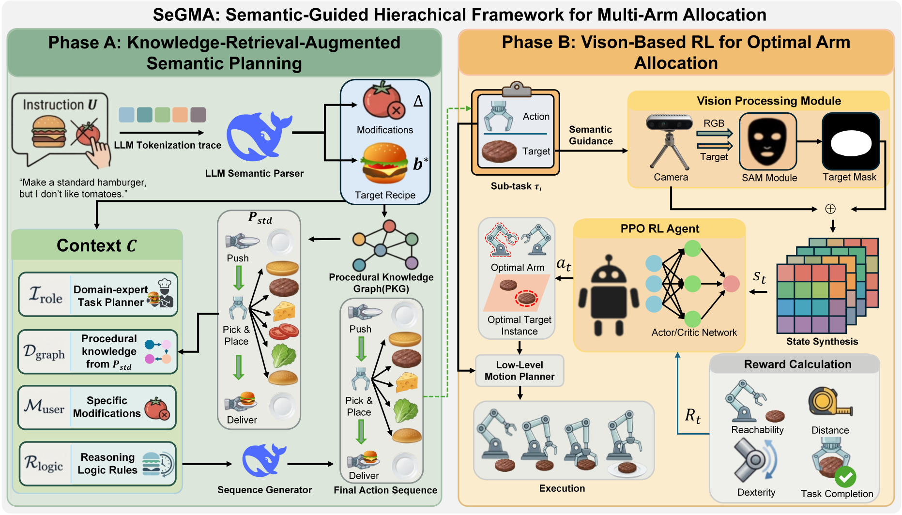
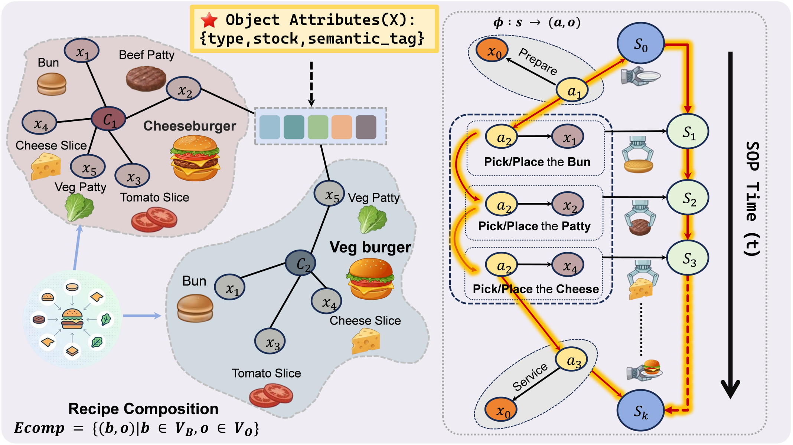
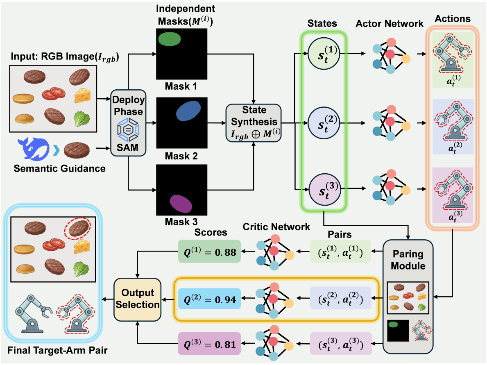

Multi-arm robotic systems show great potential for complex, long-horizon tasks such as multi-step assembly and food service. However, achieving both logically correct semantic planning for personalized instructions and efficient physical execution remains a significant challenge. To address this, a hierarchical framework for semantic-guided multi-arm task allocation is proposed. First, a Procedural Knowledge Graph (PKG) is utilized to constrain Large Language Models (LLM). This ensures the generation of accurate, physically feasible, and personalized preparation sequences. Subsequently, a Reinforcement Learning (RL) policy dynamically allocates the generated steps to the optimal robot based on visual observations. This module implicitly learns reachability priors, enabling the system to achieve highly efficient allocation and a superior task completion rate during the decision phase. Finally, traditional control methods are employed to perform the assigned actions sequentially. Validations are conducted in both the ManiSkill simulation environment and real-world scenarios, and results demonstrate that the proposed method generally outperforms baseline methods in terms of allocation efficiency and overall task completion.



Scenario description for k=2
Scenario description for k=3
Scenario description for k=4
Scenario description for k=2
Scenario description for k=3
Scenario description for k=4